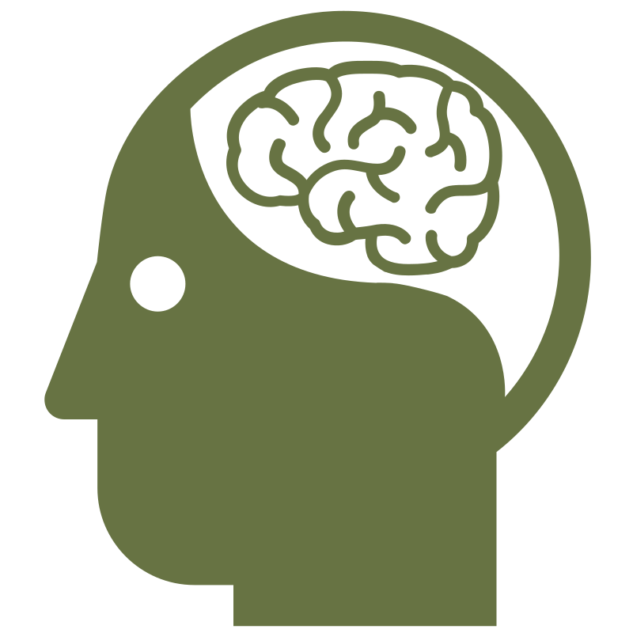
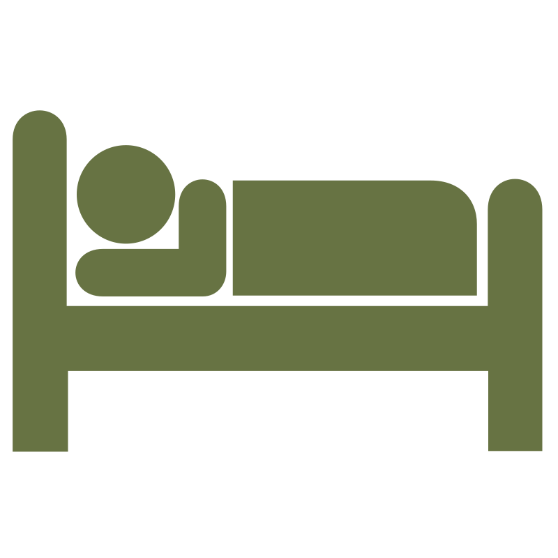
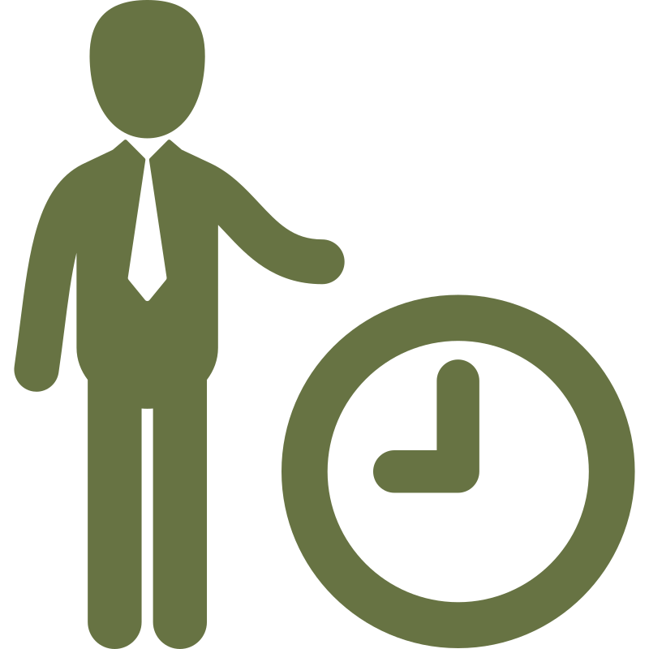
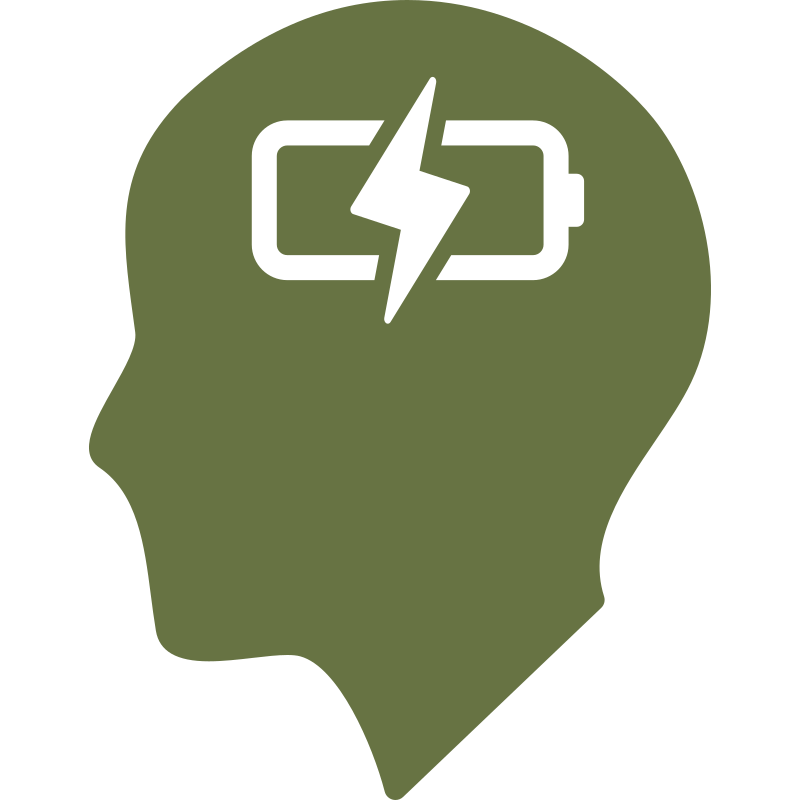
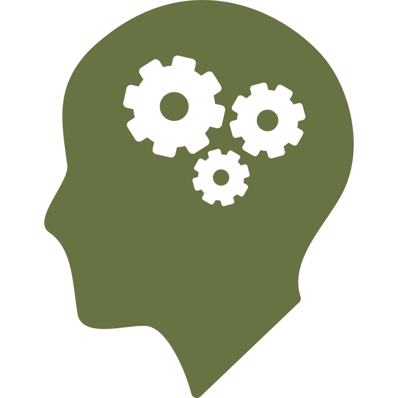
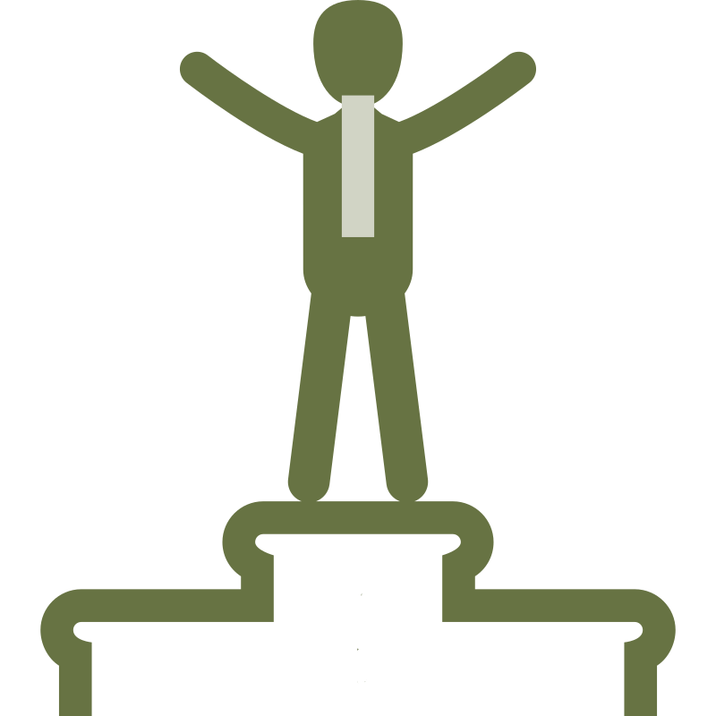

Understanding the sources of pressure in your life, building a more reliable capacity to manage them day to day, and developing the conditions for sustained recovery from difficulty.

Identifying what is disrupting your sleep, examining the thinking and habits around it, and developing more consistent, restorative patterns.

Looking at workload, the pressures around performance, and what a sustainable working life can realistically look like for you.

Exploring what is contributing to low energy or a reduced sense of direction, and working towards greater clarity and purpose.
If exercise, nutrition, alcohol, or rest have slipped and you are aware it is affecting how you feel, examining why previous attempts at change have not held and developing an approach that is realistic for your life.

Identifying the thinking and behaviours that consistently pull you off course, and building the conditions for more lasting change.

Understanding what shapes your capacity to cope with difficulty, identifying what depletes and what builds your reserves, and developing a more sustainable relationship with stress and setback.